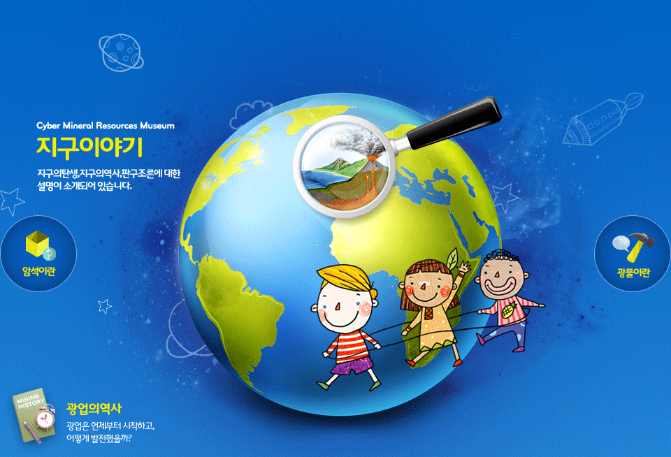

바로가기 메뉴
메인메뉴 바로가기
본문내용 바로가기
한국광물자원공사 광물이야기
공통 네비게이션 영역
Home
한국광해광업공단
광물정보(KOMIS)
저작권정책
사이트맵
통합검색 영역
통합검색 폼
통합검색
메인메뉴
광물이란
광물 개요
광물의 특성
법정광물
광물 분류
암석이란
암석윤회
화성암
퇴적암
변성암
지구의 역사
탄생
역사
판구조론
광업의 역사
광업의 기원
고려시대
조선시대
개항 이후
일제강점기
해방 이후
광물정보
현미경으로 보는 광물
만화로 보는 광물
광물갤러리
자주묻는 질문

광물
광물개요
광물의 특성
법정광물이란?
암석
화성암
퇴적암
변성암
지구의역사
탄생
역사
판구조론
만화
만화로 보는
광물자원여행